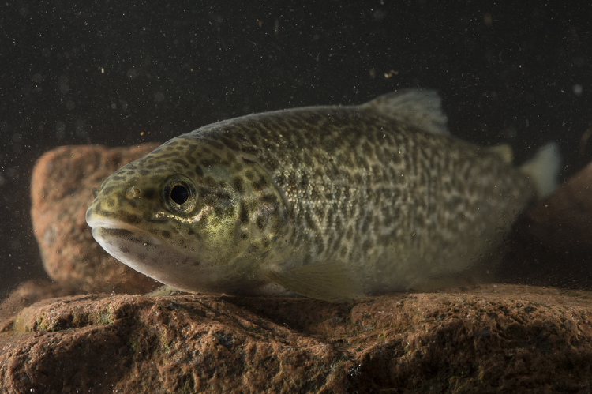

La trota marmorata (Salmo trutta marmoratus) è un'altra specie di notevole importanza che possiamo trovare lungo il Noce. Nelle aree umide e ripariali come l'Ontaneta di Croviana, ad esempio, trova un habitat perfetto per la sua riproduzione. È un prezioso endemismo (quindi non la troviamo in nessun altra parte del mondo) della pianura padano-veneta e della regione alpina meridionale. A causa però delle alterazioni dei corpi idrici, come la regolamentazione della portata dei fiumi e l'abbassamento del livello delle acque e della sua frequente ibridazione con la Trota fario (favorito da massicce immissioni ai fini della pesca), l'areale di distribuzione di questa specie si è ridotto drasticamente.

È simile alla Trota fario, dalla quale si distingue per le dimensioni maggiori (fino a 60 cm), ma soprattutto per la livrea che non presenta mai punteggiature rosse o nere ma una marmoreggiatura scura lungo dorso, fianchi e sull'opercolo. Il ventre è bianco o grigio. Come tutti i Salmonidi presenta una piccola pinna adiposa sul peduncolo caudale.
Solitaria e diurna, vive in fondali profondi con anfratti e ripari dove stabilisce il territorio di caccia a cui è fortemente legata.
Si sposta solo al momento della risalita del corso d'acqua per la riproduzione. L'alimentazione è carnivora, soprattutto invertebrati che vivono sul fondale e insetti che cadono in acqua e, più raramente, altri pesci. La riproduzione avviene tra ottobre e dicembre, prevalentemente nelle zone con acque più tranquille spesso legate alla vegetazione ripariale: infatti nella risalita del corso d'acqua la femmina cerca aree con fondali ghiaiosi, a debole corrente e scarsa profondità, dove prepara un nido in cui depone le uova. Queste, fecondate dal maschio e ricoperte di ghiaia, schiudono dopo circa due mesi.
L'allevamento in cattività di questa specie presenta numerose difficoltà ed è fatto soltanto in pochi centri specializzati: questo rende la Trota marmorata un pesce di scarso interesse commerciale.